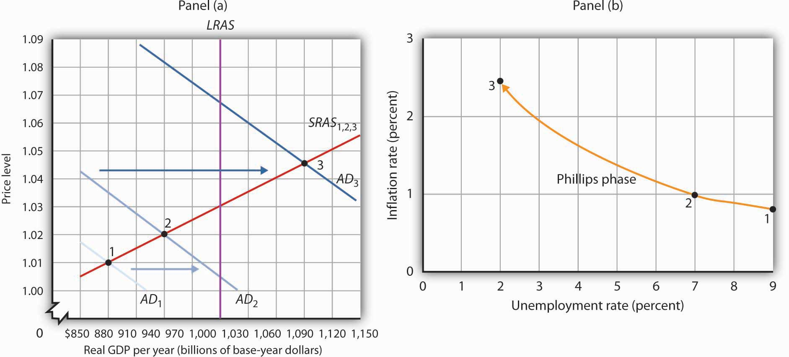
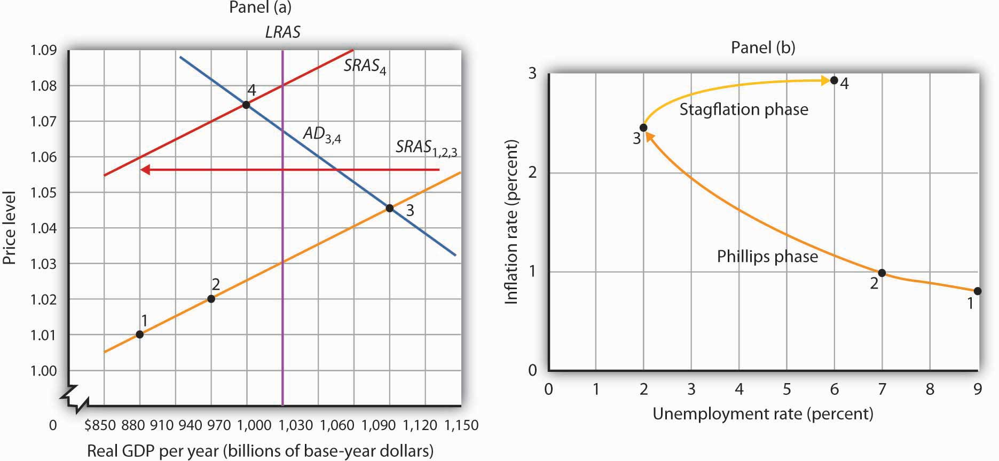
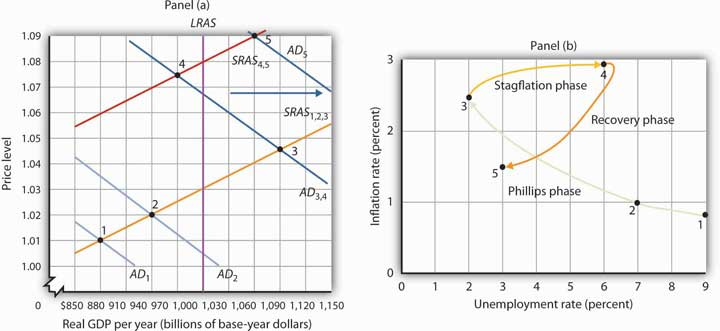

We have examined the inflation and unemployment experience in the United States during the past half century. Our task now is to explain it. We will apply the model of aggregate demand and aggregate supply, along with our knowledge of monetary and fiscal policy, to explain just why the economy performed as it did. We will find that the relationship between inflation and unemployment depends crucially on events, macroeconomic policy, and expectations.
The next three sections discuss the pattern that unfolded from the 1970s through the 1990s in which stagflation and then recovery followed Phillips phases. We will also look at the behavior of the economy in the first decade of the 21st century. Each phase results from a specific pattern of shifts in the aggregate demand and short-run aggregate supply curves.
It is important to be careful in thinking about the meaning of changes in inflation as we examine the cycle of inflation and unemployment. The rise in inflation during a Phillips phase does not simply mean that the price level rises. It means that the price level rises by larger and larger percentages. Rising inflation means that the price level is rising at an increasing rate. In a recovery phase, a falling rate of inflation does not imply a falling price level. It means the price level is rising, but by smaller and smaller percentages. Falling inflation means that the price level is rising more slowly, not that the price level is falling.
As we saw in the last section, the Phillips phase of the inflation-unemployment relationship conforms to the concept of a short-run Phillips curve. It is a period in which inflation tends to rise and unemployment tends to fall.
Figure 31.6 "A Phillips Phase" shows how a Phillips phase can unfold. Panel (a) shows the model of aggregate demand and aggregate supply; Panel (b) shows the corresponding path of inflation and unemployment.
Figure 31.6 A Phillips Phase
A Phillips phase is marked by increases in aggregate demand pushing real GDP and the price level up along the short-run aggregate supply curve SRAS1,2,3. The result is rising inflation and falling unemployment. The points labeled in Panels (a) and (b) correspond to one another; point 1 in Panel (a) corresponds to point 1 in Panel (b), and so on.
We shall assume in Figure 31.6 "A Phillips Phase" and in the next two figures that the following relationship between real GDP and the unemployment rate holds. In our example, the level of potential output will be $1,000 billion, while the natural rate of unemployment is 5.0%. The numbers given in the table correspond to the numbers used in Figure 31.6 "A Phillips Phase" through Figure 31.8 "The Recovery Phase". Notice that the higher the level of real GDP, the lower the unemployment rate. That is because the production of more goods and services requires more employment. For a given labor force, a higher level of employment implies a lower rate of unemployment.
| Real GDP (Billions) | Unemployment Rate (%) |
|---|---|
| $880 | 9.0 |
| 910 | 8.0 |
| 940 | 7.0 |
| 970 | 6.0 |
| 1,000 | 5.0 |
| 1,030 | 4.0 |
| 1,060 | 3.0 |
| 1,090 | 2.0 |
Suppose that in Period 1 the price level is 1.01 and real GDP equals $880 billion. The economy is operating below its potential level. The unemployment rate is 9.0%; we shall assume the price level in Period 1 has risen by 0.8% from the previous period. Point 1 in Panel (b) thus shows an initial rate of inflation of 0.8% and an unemployment rate of 9.0%.
Now suppose policy makers respond to the recessionary gap of the first period with an expansionary monetary or fiscal policy. Aggregate demand in Period 2 shifts to AD2. In Panel (a), we see that the price level rises to 1.02 and real GDP rises to $940 billion. Unemployment falls to 7.0%. The price increase from 1.01 to 1.02 gives us an inflation rate of about 1.0%. Panel (b) shows the new combination of inflation and unemployment rates for Period 2.
Impact lags mean that expansionary policies, even those undertaken in response to the recessionary gap in Periods 1 and 2, continue to expand aggregate demand in Period 3. In the case shown, aggregate demand rises to AD3, pushing the economy well past its level of potential output into an inflationary gap. Real GDP rises to $1,090 billion, and the price level rises to 1.045 in Panel (a) of Figure 31.6 "A Phillips Phase". The increase in real GDP lowers the unemployment rate to 2.0%, and the inflation rate rises to 2.5% at point 3 in Panel (b). Unemployment has fallen at a cost of rising inflation.
The shifts from point 1 to point 2 to point 3 in Panel (b) are characteristic of the Phillips phase. It is crucial to note how these changes occurred. Inflation rose and unemployment fell, because increasing aggregate demand moved along the original short-run aggregate supply curve SRAS1,2,3. We saw in the chapter that introduced the model of aggregate demand and aggregate supply that a short-run aggregate supply curve is drawn for a given level of the nominal wage and for a given set of expected prices. The Phillips phase, however, drives prices above what workers and firms expected when they agreed to a given set of nominal wages; real wages are thus driven below their expected level during this phase. Firms that have sticky prices are in the same situation. Firms set their prices based on some expected price level. As rising inflation drives the price level beyond their expectations, their prices will be too low relative to the rest of the economy. Because some firms and workers are committed to their present set of prices and wages for some period of time, they will be stuck with the wrong prices and wages for a while. During that time, their lower-than-expected relative prices will mean greater sales and greater production. The combination of increased production and lower real wages means greater employment and, thus, lower unemployment.
Ultimately, we should expect that workers and firms will begin adjusting nominal wages and other sticky prices to reflect the new, higher level of prices that emerges during the Phillips phase. It is this adjustment that can set the stage for a stagflation phase.
As workers and firms become aware that the general price level is rising, they will incorporate this fact into their expectations of future prices. In reaching new agreements on wages, they are likely to settle on higher nominal wages. Firms with sticky prices will adjust their prices upward as they anticipate higher prices throughout the economy.
As we saw in the chapter introducing the model of aggregate demand and aggregate supply, increases in nominal wages and in prices that were sticky will shift the short-run aggregate supply curve to the left. Such a shift is illustrated in Panel (a) of Figure 31.7 "A Stagflation Phase", where SRAS1,2,3 shifts to SRAS4. The result is a shift to point 4; the price level rises to 1.075, and real GDP falls to $970 billion. The increase in the price level to 1.075 from 1.045 implies an inflation rate of 2.9% ([1.075 − 1.045] / 1.045 = 2.9%); unemployment rises to 6.0% with the decrease in real GDP. The new combination of inflation and unemployment is given by point 4 in Panel (b).
Figure 31.7 A Stagflation Phase
In a stagflation phase, workers and firms adjust their expectations to a higher price level. As they act on their expectations, the short-run aggregate supply curve shifts leftward in Panel (a). The price level rises to 1.075, and real GDP falls to $970 billion. The inflation rate rises to 2.9% as unemployment rises to 6.0% at point 4 in Panel (b).
The essential feature of a stagflation phase is a change in expectations. Workers and firms that were blindsided by rising prices during a Phillips phase ended up with lower real wages and lower relative price levels than they intended. In a stagflation phase, they catch up. But the catching up shifts the short-run aggregate supply curve to the left, producing a reduction in real GDP and an increase in the price level.
The stagflation phase shown in Figure 31.7 "A Stagflation Phase" leaves the economy with a recessionary gap at point 4 in Panel (a). The economy is bumped into a recession by changing expectations. Policy makers can be expected to respond to a recessionary gap by boosting aggregate demand. That increase in aggregate demand will lead the economy into a recovery phase.
Figure 31.8 "The Recovery Phase" illustrates a recovery phase. In Panel (a), aggregate demand increases to AD5, boosting the price level to 1.09 and real GDP to $1,060. The new price level represents a 1.4% ([1.09 − 1.075] / 1.075 = 1.4%) increase over the previous price level. The price level is higher, but the inflation rate has fallen sharply. Meanwhile, the increase in real GDP cuts the unemployment rate to 3.0%, shown by point 5 in Panel (b).
Figure 31.8 The Recovery Phase
Policy makers act to increase aggregate demand in order to move the economy out of a recessionary gap created during a stagflation phase. Here, aggregate demand shifts to AD4, boosting the price level to 1.09 and real GDP to $1,060 billion at point 5 in Panel (a). The increase in real GDP reduces unemployment. The price level has risen, but at a slower rate than in the previous period. The result is a reduction in inflation. The new combination of unemployment and inflation is shown by point 5 in Panel (b).
Policies that stimulate aggregate demand and changes in expected price levels are not the only forces that affect the values of inflation and unemployment. Changes in production costs shift the short-run aggregate supply curve. Depending on when these changes occur, they can reinforce or reduce the swings in inflation and unemployment. For example, Figure 31.4 "Connecting the Points: Inflation and Unemployment" shows that inflation was exceedingly low in the late 1990s. During this period, oil prices were very low—only $12.50 per barrel in 1998, for example. In terms of Figure 31.7 "A Stagflation Phase", we can represent the low oil prices by a short-run aggregate supply curve that is to the right of SRAS4,5. That would mean that output would be somewhat higher, unemployment somewhat lower, and inflation somewhat lower than what is shown as point 5 in Panels (a) and (b) of Figure 31.8 "The Recovery Phase".
Comparing the very late 1990s to the early 2000s, Figure 31.4 "Connecting the Points: Inflation and Unemployment" shows that both periods exhibit Phillips phases, but that the early 2000s has both higher inflation and higher unemployment. One way to explain these back-to-back Phillips phases is to look at Figure 31.6 "A Phillips Phase". Assume point 1 represents the economy in 2001, with aggregate demand increasing. At the same time, though, oil and other commodity prices were rising markedly—tripling between 2001 and 2007. Thus, the short-run aggregate supply curve was also shifting to the left of SRAS1,2,3. This would mean that output would be somewhat lower, unemployment somewhat higher, and inflation somewhat higher than what is shown as points 2 and 3 in Panels (a) and (b) of Figure 31.6 "A Phillips Phase". The 2000s Phillips curve would thus be above the late 1990s Phillips curve. While the Phillips phase of the early 2000s is farther from the origin than that of the late 1990s, it is noteworthy that the economy did not go through a severe stagflation phase, suggesting some learning about how to conduct monetary and fiscal policy.
The recession that began in late 2007 is largely seen as a shift to the left in aggregate demand due to the marked fall in housing prices and financial market stresses. As a result, the economy went through a Phillips phase of higher unemployment and lower inflation. The expansionary monetary and fiscal policies of the late 2000s were geared toward pushing the aggregate demand curve back toward the right, thereby cajoling the economy back up the negatively sloped short-run Phillips curve.
We can conclude that policy efforts to change aggregate demand, together with changes in expectations and a wide variety of factors that cause the aggregate demand or aggregate supply curve to shift, have played an important role in generating the inflation-unemployment patterns we observe in the past half century.
Lags have played a crucial role in the cycle as well. If policy makers respond to a recessionary gap with an expansionary fiscal or monetary policy, then we know that aggregate demand will increase, but with a lag. Policy makers could thus undertake an expansionary policy and see little or no response at first. They might respond by making further expansionary efforts. When the first efforts finally shift aggregate demand, subsequent expansionary efforts can shift it too far, pushing real GDP beyond potential and creating an inflationary gap. These increases in aggregate demand create a Phillips phase. The economy’s correction of the gap creates a stagflation phase. If policy makers respond to the stagflation phase with a new round of expansionary policies, the initial result will be a recovery phase. Sufficiently large increases in aggregate demand can then push the economy into another Phillips phase, and so on.
Using the model of aggregate demand and aggregate supply; sketch the changes in the curve(s) that produced each of the phases you identified in Try It! 16-1. Do not worry about specific numbers; just show the direction of changes in aggregate demand and/or short-run aggregate supply in each phase.
The path of U.S. inflation and unemployment followed a fairly consistent pattern of clockwise loops from 1961 to 2002, but the nature of these loops changed with changes in policy.
If we follow the cycle shown in Figure 31.4 "Connecting the Points: Inflation and Unemployment", we see that the three Phillips phases that began in 1961, 1972, and 1976 started at successively higher rates of inflation. Fiscal and monetary policy became expansionary at the beginnings of each of these phases, despite rising rates of inflation.
As inflation soared into the double-digit range in 1979, President Jimmy Carter appointed a new Fed chairman, Paul Volcker. The president gave the new chairman a clear mandate: bring inflation under control, regardless of the cost. The Fed responded with a sharply contractionary monetary policy and stuck with it even as the economy experienced its worse recession since the Great Depression.
Falling oil prices after 1982 contributed to an unusually long recovery phase: Inflation and unemployment both fell from 1982 to 1986. The inflation rate at which the economy started its next Phillips phase was the lowest since the Phillips phase of the 1960s.
The Fed’s policies since then have clearly shown a reduced tolerance for inflation. The Fed shifted to a contractionary monetary policy in 1988, so that inflation during the 1986–1989 Phillips phase never exceeded 4%. When oil prices rose at the outset of the Persian Gulf War in 1990, the resultant swings in inflation and unemployment were much less pronounced than they had been in the 1970s.
The Fed continued its effort to restrain inflation in 1994 and 1995. It shifted to a contractionary policy early in 1994 when the economy was still in a recessionary gap left over from the 1990–1991 recession. The Fed’s announced intention was to prevent any future increase in inflation. In effect, the Fed was taking explicit account of the lag in monetary policy. Had it continued an expansionary monetary policy, it might well have put the economy in another Phillips phase. Instead, the Fed has conducted a carefully orchestrated series of slight shifts in policy that succeeded in keeping the economy in the longest recovery phase since World War II.
To be sure, the stellar economic performance of the United States in the late 1990s was due in part to falling oil prices, which shifted the short-run aggregate supply curve to the right and helped push inflation and unemployment down. But it seems clear that a good deal of the credit can be claimed by the Fed, which paid closer attention to the lags inherent in macroeconomic policy. Ignoring those lags helped create the inflation-unemployment cycles that emerged with activist stabilization policies in the 1960s.